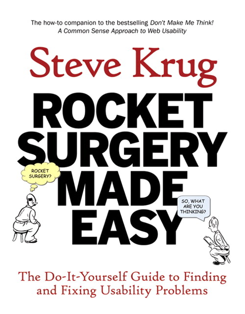
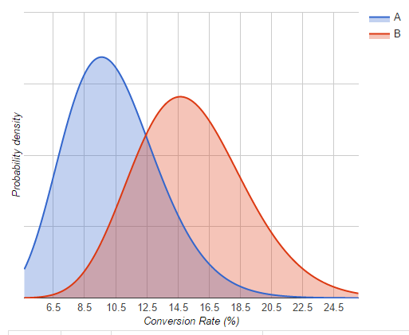

Developers and Users can be friends
Delivering valuable software.
Design Thinking isn't just for Designers
Eschewing Specialisation.
Design doesn't just happen before the Sprints
Too often User Experience becomes a late requirement.
- New Feature design
- Acceptability
- Effectiveness
We want to ask three types of user research question. How should a feature work? Does the design make sense? Does it work in practice?
- You are not your users
- Your customer might not be your user
- Your user might not know what they want
- The world is a big place
There are two key things to try and deal with in eliciting new features from users. The first question is what's the problem, and the second is how to solve it?

Acceptability
Does the interface work, as an interface? Is there annoying lag, etc?


Advanced common sense doesn't have to be expensive.
https://www.sensible.com/

Proceed with Caution!

- One size might not fit all
- Reuse patterns, designs, visuals
- Be ready to fail